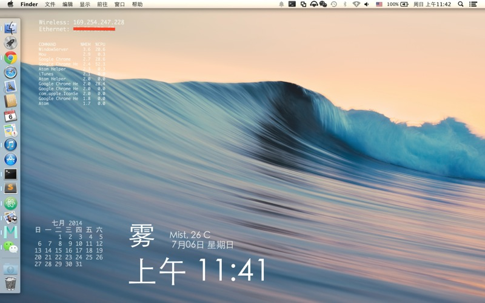

使用的软件
Geektool. 它的主要用途就是把终端输出的结果投影到桌面上，然后可以设置刷新频率什么的，让你的桌面看上去比较碉堡。
它是免费软件。你也可以使用 Homebrew 获得它。
brew cask install geektool
几个 Geeklet
显示占用前 12 的进程（别问我为啥是前 12 ……）。
ps -amcwwwxo "command %mem %cpu" | grep -v grep | head -13
显示以太网 IP 和无线网络 IP （这与你的硬件有关，我的电脑是 Macbook Pro late 2013）。
myen0=`ifconfig en0 | grep "inet " | grep -v 127.0.0.1 | awk '{print $2}'`
if [ "$myen0" != "" ]
then
echo "Wireless: $myen0"
else
echo 'Wireless: \033[0;31;1mINACTIVE\033[0m'
fi
myen1=`ifconfig en4 | grep "inet " | grep -v 127.0.0.1 | awk '{print $2}'`
if [ "$myen1" != "" ]
then
echo "Ethernet: $myen1"
else
echo 'Ethernet: \033[0;31;1mINACTIVE\033[0m'
fi
获得天气图标（我用的是 Emoji 因为不想找图片……图示上是雾天找不到 Emoji 所以就写个雾有点对不起观众）。你肯定想问这个表怎么打出来的，这跟 Yahoo 天气的天气编码有关系你需要自己查一下。
顺便说一句我住北京，如果你住别处请改一下城市代码。
python <<EOF
# coding: utf-8
import urllib2
from xml.etree import ElementTree as ET
icon_table = (
'🌀',
'🌀',
'🌀',
'☔️',
'☔️',
'❄️',
'❄️',
'❄️',
'☔️',
'☔️',
'☔️',
'☔️',
'☔️',
'❄️',
'❄️',
'❄️',
'❄️',
'❄️',
'❄️',
'风',
'雾',
'雾',
'雾',
'风',
'风',
'冷',
'☁️',
'☁️',
'☁️',
'☁️',
'☁️',
'☀️',
'☀️',
'☀️',
'☀️',
'❄️',
'🌞',
'🌂',
'🌂',
'☔️',
'☔️',
'❄️',
'❄️',
'❄️',
'☁️',
'🌂',
'❄️',
'🌂',
'🔥',
)
#shanghai, 2151849
# beijing, 2151330
# suzhou, 2137082
url = 'http://weather.yahooapis.com/forecastrss?w=2151330&u=c'
# namespace
yweather = '{http://xml.weather.yahoo.com/ns/rss/1.0}'
geo = '{http://www.w3.org/2003/01/geo/wgs84_pos#}'
# get weather data
data = urllib2.urlopen(url).read()
tree = ET.fromstring(data)
root = tree
channel = root.find('channel')
item = channel.find('item')
current = item.find(yweather + 'condition')
condition = '%s, %s℃' % (current.attrib['text'], current.attrib['temp'])
icon = icon_table[int(current.attrib['code'])]
print icon
EOF
效果

Comments !